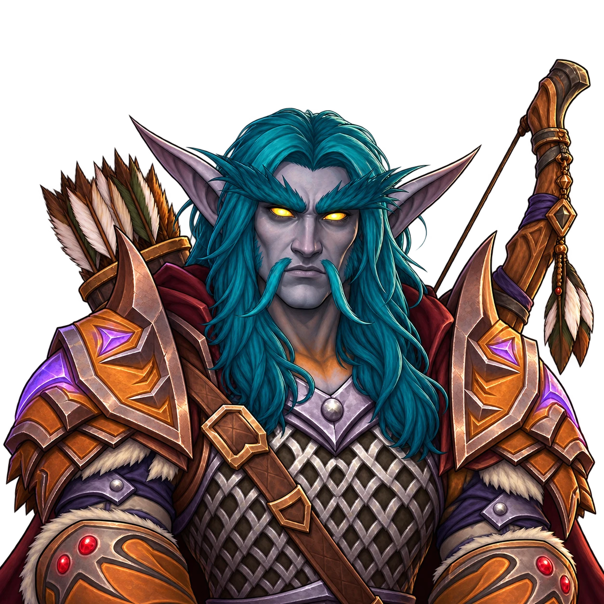
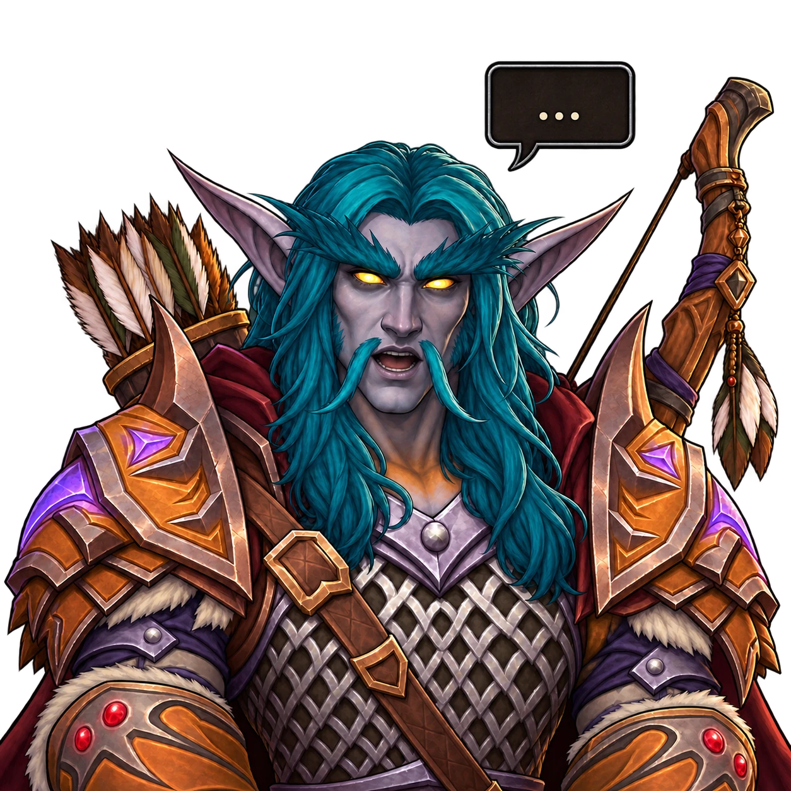

An avatar that talks when you do.
An OBS image source that swaps between two images based on your microphone, with optional movement effects and blinking. No extra app, no window capture.


Quick start
INSTALLOne-linermacOS
# Builds against your installed OBS and installs the plugin.
curl -fsSL https://raw.githubusercontent.com/realworldbuilder/obs-image-reaction/main/install.sh | bash
Needs OBS Studio in /Applications and the Xcode Command Line Tools (xcode-select --install). Run it again after an OBS update if the plugin stops loading.
- Restart OBS.
- In Sources, click + and add Image Reaction.
- Set Image when silence and Image when sound.
- Pick your microphone under Audio source.
- Adjust Reaction threshold until the image only changes when you talk.
Features
Reacts to sound
One image while you are silent, another while you speak. Works with any OBS audio source, with adjustable threshold and smoothing.
State effects
Vibe, drift or shake, set separately for the silent and speaking states, each with its own intensity and speed.
Blinking
Add an optional blink image per state. It appears briefly at random intervals you control.
The effects and blinking have only been built and tested on macOS.